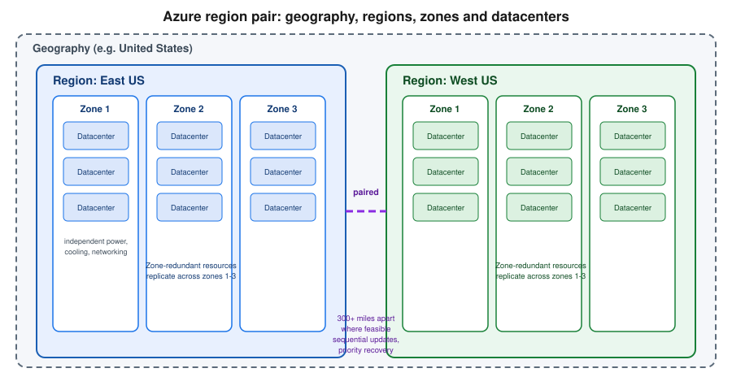

Azure Global Infrastructure
|
This content was generated with the assistance of AI and should be verified against the official documentation before being relied on in production. |
Examples on this page target Azure CLI 2.90.0 (checked 2026-09-26) and the current Azure Resource Manager control plane; command output shapes are stable across recent CLI versions, so minor version differences should not affect the commands shown below.
Azure’s physical footprint is organized as a hierarchy: geographies contain regions, regions contain availability zones, and availability zones contain one or more physical datacenters. Where a workload lands in that hierarchy drives compliance, resilience and latency, so this page covers each level and how to choose between them.
Geographies
A geography is a geopolitical boundary — typically a country or a defined multi-country area — that contains one or more regions and keeps customer data and disaster-recovery boundaries inside that same boundary. Choosing a geography is primarily a data-residency and compliance decision: a customer in a jurisdiction with data sovereignty requirements (for example, keeping data inside the European Union) picks a geography that satisfies that requirement first, then chooses a region within it. Examples include "United States," "Europe," "Asia Pacific," and "Brazil."
Regions
A region is a set of datacenters deployed within a geography, connected through a dedicated low-latency network,
and identified by a name such as eastus, westeurope or southeastasia. Almost every Azure service is
deployed per region: a resource created in eastus runs on infrastructure physically located in that region, and
most resource types cannot span regions directly (cross-region use requires explicit replication or a
multi-region architecture on top). Azure publishes the full current region list, including which are
paired and which are sovereign, at the Azure global infrastructure site.
In the Azure portal
-
Sign in to the Azure portal and open Home.
-
Search for and open All resources, or open any resource creation blade (for example, "Create a resource" -> "Virtual machine").
-
On the Basics tab, open the Region dropdown — this lists every region where that specific resource type can currently be created, not the full global list.
-
To see the full region catalog independent of a specific resource, open Subscriptions → select a subscription → Resource providers, or consult the public region list linked under References below.
Availability zones
An availability zone is one or more physically separate datacenters within a region, each with its own independent power, cooling and networking. Zones within a region are connected by a high-throughput, low-latency network, but their independent infrastructure means a power or cooling failure in one zone does not take down another. Not every region has availability zones — only regions built with that physical separation expose them, typically three zones per enabled region.
Resources can be deployed against zones in two ways:
- Zonal
-
The resource is pinned to a single, specific zone (for example, a VM created in zone 2 of
eastus). This gives explicit control over placement — useful for pairing a VM with a specific zone-pinned disk or for building an application’s own cross-zone replication — but the resource itself has no built-in redundancy if that zone degrades. - Zone-redundant
-
The resource (or its data) is automatically replicated synchronously across multiple zones in the region, and Azure manages the failover. Many PaaS services (for example, zone-redundant storage, or a zone-redundant Azure SQL Database) offer this as a configuration option rather than something the customer builds manually.
In the Azure portal
-
Open the resource creation blade for a zone-aware resource type (for example Create a virtual machine).
-
On the Basics tab, find Availability options.
-
Choose Availability zone and pick a specific zone number for a zonal deployment, or choose a zone-redundant option where the service offers one (naming varies per service — some expose it as a redundancy setting on the Basics or a dedicated Redundancy tab instead).
With the Azure CLI
# Check which zones a region exposes, per resource type
az vm list-skus --location eastus --resource-type virtualMachines --output table
# Create a VM pinned to a specific zone
az vm create \
--resource-group myResourceGroup \
--name myZonalVm \
--image Ubuntu2404 \
--zone 2 \
--size Standard_D2s_v5Region pairs

Most Azure regions are paired with another region within the same geography, at a physical distance of at least 300 miles apart where the geography’s shape allows it — keeping both regions far enough apart to avoid a single natural disaster affecting both, while staying inside the same geography for data-residency purposes. The pairing gives three practical benefits: platform updates are rolled out to paired regions sequentially, never both at once, so a bad update cannot take down both halves of a pair simultaneously; if a broad regional outage requires Microsoft to prioritize recovery, one region of each pair is restored first; and some services replicate data between paired regions automatically for disaster recovery. A region pair is a platform-level relationship the customer does not create — it can be used as the basis for a manual multi-region architecture (choosing the paired region as the secondary), but nothing about it is provisioned automatically for a customer’s own resources.
In the Azure portal
-
Open the Azure global infrastructure documentation (linked under References below) to look up a specific region’s paired region — pairing is a fixed platform mapping, not something surfaced as a portal blade setting.
-
When configuring disaster recovery for a specific service (for example, Azure Site Recovery or geo-redundant storage), the target region dropdown in that service’s setup blade defaults to, or highlights, the paired region.
With the Azure CLI
# Region-pair metadata is not exposed as a queryable CLI field; check via
# az account list-locations for the physical location, then confirm the
# pairing from the Microsoft Learn region-pair reference (see References below).
az account list-locations --query "[?name=='eastus'].{name:name, physicalLocation:metadata.physicalLocation}" --output tableSovereign clouds
Alongside the public, global Azure cloud, Microsoft operates a small number of sovereign clouds — physically and logically isolated Azure instances serving a specific government or jurisdiction, such as Azure Government (for US federal, state and local government workloads) and Azure operated by 21Vianet (serving mainland China). These are run by separate operating entities under distinct compliance boundaries and certifications from the public cloud — a subscription in the public cloud has no visibility into, or connectivity with, a sovereign cloud, and resources, endpoints and even some CLI/API behavior differ between them. Treat a sovereign cloud as a separate deployment target from the start of a project, not an afterthought, since migrating between them later is not a simple region move.
In the Azure portal
-
Sovereign clouds have their own portal URLs (for example,
portal.azure.usfor Azure Government) — signing in to the publicportal.azure.comnever surfaces sovereign-cloud subscriptions.
Choosing a region
Picking a region for a workload is a trade-off across four criteria, and rarely does one region win on all four:
- Service and SKU availability
-
Not every service, and not every SKU/size within a service, is available in every region — a new GPU VM size or a preview service often launches in only a handful of regions first.
- Latency to users
-
A region physically closer to the workload’s users lowers network latency; for a global audience this usually means choosing several regions rather than one.
- Data residency and compliance
-
Regulatory or contractual requirements may restrict which geography, or even which specific region, data is allowed to reside in.
- Price
-
The same VM size or storage tier can have different prices between regions, driven by local infrastructure, power and land costs.
In the Azure portal
-
Open the Products available by region page to compare service availability across regions before committing to one.
-
On any resource creation blade, the Region dropdown only lists regions where that resource type can currently be created, giving a quick per-resource-type check.
-
Use the Azure pricing calculator and select different regions for the same SKU to compare price differences directly.
With the Azure CLI
# Check whether a specific VM SKU is available (and its restrictions) in a region
az vm list-skus --location westeurope --size Standard_D4s_v5 --output table
# List every VM SKU available in a region, filtering out restricted ones
az vm list-skus --location westeurope --all false --output table
# Check whether a globally-unique resource name is available before creating it
# (name-availability checks are resource-type specific; storage account example below)
az storage account check-name --name mystorageaccountname